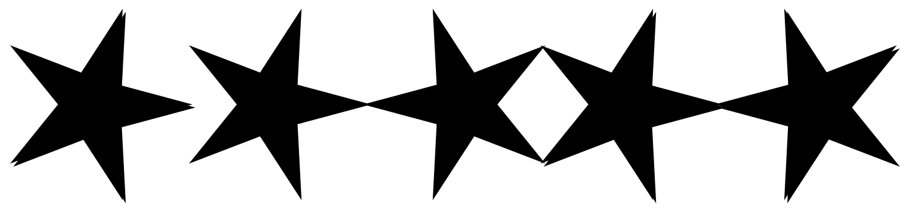
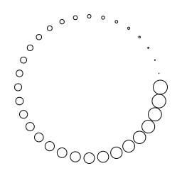

Function Composition
In the previous chapter we have how useful it is to pass function to methods and return functions from methods. In this section we'll explore another thing we can do with functions: function composition.
Composition, in the mathematical rather than artistic sense, means creating something more complex by combining simpler parts. In mathematics we might say we compose the numbers 1 and 1, using addition, to produce 2. In our work so far, we've composed images using methods like above and on.
Function composition means creating a function that connects the output of one component function to the input of another component function. Written in terms of types, function composition joins functions of type A => B and B => C to produce a function of type A => C. In Scala we use the andThen method to do this.
Here's an example. We start by defining two functions. The first adds a drop shadow to an Image. The second places an Image beside a copy of itself mirrored around the y-axis.
val dropShadow = (image: Image) =>
image.on(image.strokeColor(Color.black).fillColor(Color.black).at(5, -5))
val mirrored = (image: Image) =>
image.beside(image.transform(Transform.horizontalReflection))Both functions have type Image => Image, so we can compose them together. We do this using the andThen method to create a function that connects the output of the first function to the input of the second function.
val composed = mirrored.andThen(dropShadow)Below we see the image created by the program
val star = Image
.star(100, 50, 5)
.fillColor(Color.fireBrick)
.strokeColor(Color.dodgerBlue)
.strokeWidth(7.0)
dropShadow(star)
.beside(mirrored(star))
.beside(composed(star))
This shows how the composed function applies the output of the first function to the second function: we first mirror the star and then add a drop shadow.
Let's see how we can apply function composition to our examples of parametric curves. One limitation of the parametric cures we've created so far is that their size is fixed. For example when we defined parametricCircle we fixed the radius at 200.
def parametricCircle(angle: Angle): Point =
Point.polar(200, angle)What if we want to create circles of different radius? We could use a method that returns a function like so.
def parametricCircle(radius: Double): Angle => Point =
(angle: Angle) => Point.polar(radius, angle)This would be a reasonable solution but we're going to explore a different approach using our new tool of function composition. Our approach will be this:
-
each parametric curve will be of some default size that we'll loosely define as "usually between 0 and 1"; and
-
we'll define a function
scalethat will change the size as appropriate.
A quick example will make this more concrete. Let's redefine parametricCircle so the radius is 1.
val parametricCircle: Angle => Point =
(angle: Angle) => Point(1.0, angle)Now we can define scale.
def scale(factor: Double): Point => Point =
(point: Point) => Point(point.r * factor, point.angle)We can use function composition to create circles of different sizes as follows.
val circle100 = parametricCircle.andThen(scale(100))
val circle200 = parametricCircle.andThen(scale(200))
val circle300 = parametricCircle.andThen(scale(300))We can use the same approach for our spiral, adjusting the function slightly so the radius of the spiral varies from about 0.36 at 0 degrees to 1 at 360 degrees.
val parametricSpiral: Angle => Point =
(angle: Angle) => Point(Math.exp(angle.toTurns - 1), angle)Then we can compose with scale to produce spirals of different size.
val spiral100 = parametricSpiral.andThen(scale(100))
val spiral200 = parametricSpiral.andThen(scale(200))
val spiral300 = parametricSpiral.andThen(scale(300))What else can we do with function composition?
Our parametric functions have type Angle => Point. We can compose these with functions of type Point => Image and with this setup we can make the "dots" from which we build our images depend on the point.
Here's an example where the dots get bigger as the angle increases.
val growingDot: Point => Image =
(pt: Point) => Image.circle(pt.angle.toTurns * 20).at(pt)
val growingCircle = parametricCircle
.andThen(scale(100))
.andThen(growingDot)Exercise: Drawing Curves
If we want to draw this function we'll need to change drawCurve so the parameter has type Angle => Image instead of Angle => Point. In other words we want the following skeleton.
def drawCurve(points: Int, curve: Angle => Image): Image =
???Implement drawCurve.
The answer is a small modification of the original drawCurve. We drop the marker parameter and the type of the curve parameter changes. The rest follows from this.
def drawCurve(points: Int, curve: Angle => Image): Image = {
val step = Angle.one / points
def loop(count: Int): Image = {
val angle = step * count
count match {
case 0 => Image.empty
case n =>
curve(angle).on(loop(n - 1))
}
}
loop(points)
}Having implemented drawCurve we can start drawing pictures. For example, below we have the output of growingCircle above.
